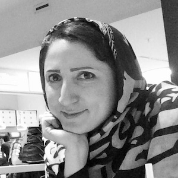

Postdoc and visiting scholar
|
Dr. Sayed Amin Moosavi (Kyoto University, Japan) | 2018 Mar – 2020 Mar |
|
Dr. Miguel Aguilera (University of the Basque Country, Spain) | 2018 Jul – 2018 Aug |
Graduate Students
 |
Safura Rashid Shomali (IPM, Iran) | 2013 Dec – 2017 Sep |
 |
Christian Donner (BCCN Berlin, Germany) | 2014 Jun – 2015 Apr |
Undergraduate Students (Internship)
 |
Bingyue Zhu (University of British Columbia, Canada) Sequential Bayes estimation and anomaly detection method for physiological time-series signals |
2019 July – 2019 Aug 2018 Jun 20 – 2019 Apr 26 |
 |
Magalie Tatischeff (University of British Columbia, Canada) Data analysis and development of statistical models for spiking activity of neural populations |
2018 Jun 20 – 2019 Apr 26 |
 |
Shukla Shashwat (IIT Bombay, India) Investigation of advanced time-series models for neural and behavioral activities |
2018 May 14 – 2018 Jul 13 |
 |
Krishna Subramani (IIT Bombay, India) Learning a hierarchical model for spatial phases in natural scenes |
2018 May 14 – 2018 Jul 13 |
| Brinti Datta (IIT Bombay, India) Filtering methods for time-series analysis |
2017 Jul 5 – 2017 Jul 14 | |
 |
Jimmy Gaudreault (Polytechnique Montreal) Data analysis of neural population activities by the dynamic Ising model |
2017 May 15 –2018 Apr 27 |
Arunabh Saxena (IIT Bombay, India) |
2017 May 8 – 2017 July 14 |